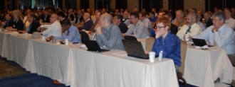
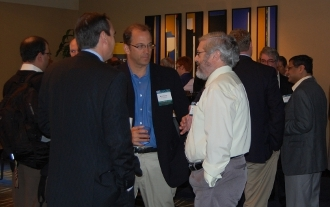
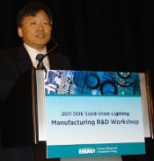
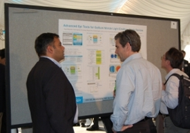
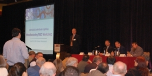
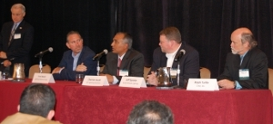
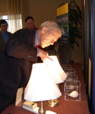

More than 250 lighting industry leaders from across the country, representing every link in the supply chain—from chip makers, to luminaire manufacturers, to material and equipment suppliers, to packagers, to luminaire testers, to the makers of testing equipment—gathered in Boston April 12–13, 2011, to share insights, ideas, and updates at the third annual Solid-State Lighting (SSL) Manufacturing R&D Workshop, hosted by DOE. The workshop is a key component of an initiative launched by DOE in 2009 to enhance the quality and lower the cost of SSL products through improvements in manufacturing equipment and processes and to foster a significant manufacturing role in the U.S. This year in Boston, attendees explored a wide range of related topics and focused on reexamining and updating the DOE Manufacturing R&D Roadmap.

DOE SSL Portfolio Manager James Brodrick kicked off Day 1 by explaining that the Roadmap focuses on manufacturing improvements in three areas—LED luminaires, packaged LEDs, and OLEDs—and that it defines clear plans, timetables, and metrics to address the major roadblocks. He noted that the roadmap not only informs DOE R&D solicitations, but also serves as a key guide to equipment and material suppliers. Emphasizing that collaboration and a common framework of priorities are essential to moving solid-state lighting forward and that cost reductions are important keys to market acceptance, Brodrick stated that there's a window of opportunity to establish a U.S. role in SSL manufacturing. "We want to maintain the leadership," he said.
Ross Young of IMS Research followed with a look at the market explosion in high-brightness (HB) LEDs and the manufacturing implications for LED and OLED lighting. He noted the healthy growth we're seeing in packaged HB LEDs, sales of which rose 55 percent in 2010 to approach $10 billion—with lighting overtaking mobile phones to become the number-two application for HB LEDs, behind only TVs. Young added that LEDs are projected to grow to serve one-third of the North American lighting market by 2015 in terms of units sold, and three-fourths of that market in terms of revenue. He explained that the attractiveness of the growing market, combined with Chinese subsidies and incentives, has brought many new LED manufacturers into the picture, most of whom are targeting general lighting.

Next, Biing-Jye Lee of Epistar offered insights about his Taiwan-based company's progression from making HB LEDs for displays to high-volume LEDs for general lighting. His overarching message was that LED lighting is well on its way and will soon be here in full force. Lee identified general lighting as a key driver of the LED market in the long-term, predicting that it will account for about one-fourth of the HB-LED market in 2015, and cited an industry forecast that LED replacement lamps will become mainstream by that year and comprise three-fourths of the market by 2018. He singled out price and performance as keys to consumer acceptance of SSL, observing that $40 for a 60W replacement lamp—the current retail price point—is too expensive and needs to come down to around $8 to achieve 25-percent market penetration in the US.
Research Updates

Each of the recipients of DOE's first eight SSL manufacturing R&D awards then gave an update on what they have accomplished to date with their projects, which range in focus from epitaxy tools, to automated defect detection systems, to the design and setup of OLED manufacturing pilot lines. These awards, which totaled nearly $24 million in American Recovery and Reinvestment Act of 2009 (ARRA) funding, were first announced in January 2010 and reflect DOE's commitment to accelerate the adoption of SSL technology through manufacturing improvements that reduce costs and improve quality:
- Nag Patibandla of Applied Materials Inc. discussed his company's progress in developing an advanced epitaxial growth system for gallium nitride (GaN) LED devices that will decrease operating costs, increase internal quantum efficiency, and improve binning yields.
- Jerry Liu of GE Global Research described his company's development of a roll-to-roll solution-processing method for producing small-molecule OLEDs.
- Anirudha Deshpande of GE Lumination talked about the development, design, and piloting of advanced manufacturing methods for warm-white general-illumination LEDs that his company is working on, based on remote-phosphor techniques.
- Srini Vedula of KLA-Tencor Corporation discussed the use of automated inspection to increase yield and decrease defects and cost in LED manufacturing.
- Mike Craven of Philips Lumileds Lighting Company, LLC, described his company's use of nitride epitaxy on 150mm silicon substrates to produce low-cost, warm-white, high-performance general-illumination LEDs.
- Andy Hawryluk of Ultratech Inc. talked about his company's work adapting an existing lithography tool for use in manufacturing HB LEDs, and in the process reducing capital expenditure and cost of ownership while increasing throughput and yield.
- Mike Hack of Universal Display Corporation talked about his company's project to set up a pilot OLED manufacturing line in the U.S. that will provide prototype lighting panels to U.S. luminaire manufacturers and facilitate the growth of the embryonic OLED lighting industry.
- Jay Montgomery of Veeco Process Equipment described his company's attempts to drive down the cost of HB LEDs by implementing process simulation tools and temperature control methods to increase metal-organic chemical vapor deposition yield, and by improving temperature measurement and control.

Workshop attendees got an opportunity to talk with all of these presenters one-on-one at an evening poster session and reception sponsored by the Next Generation Lighting Industry Alliance (NGLIA). During the workshop, Jeff Quinlan of Acuity Brands Lighting gave some background on NGLIA, an alliance of for-profit corporations formed to promote the understanding, implementation, and adoption of semiconductor light sources in specialty and general lighting systems.
Updating the SSL Manufacturing R&D Roadmap
Fred Welsh of Radcliffe Advisors previewed the proposed updates to the DOE SSL Manufacturing R&D Roadmap, which were based on feedback from a series of roundtable discussions held in March 2011.
The attendees then split up into separate LED and OLED track sessions, where they discussed these proposed updates in detail and explored in depth the related issues. A continuation of these breakout track sessions was held the following day as well. The input from these track sessions will be used to update the SSL Manufacturing R&D Roadmap and guide DOE planning for Manufacturing R&D solicitations. DOE expects to publish the updated roadmap in June, and to issue the next Manufacturing R&D solicitation in the summer of 2011.
 and OLED (right) breakout sessions offered valuable input for the next Manufacturing R&D Roadmap.")
Standards for SSL Manufacturing
Day 2 began with a talk by Tom Morrow of SEMI on his organization's SSL manufacturing standards initiative, the progress it's made to date, and how those efforts align with the goals of DOE's SSL Manufacturing Roadmap. Describing the SSL industry as dynamic but fractionated and disorganized, he said standards are essential to its growth in a number of ways. Good standards, Morrow emphasized, allow manufacturers to focus on critical requirements within the industry and get everyone to work together to identify redundant costs. He reviewed the efforts of SEMI's HB LED Standards Committee task forces on wafers, factory automation interface, and assembly, and also discussed environmental health and safety concerns.
Product Engineering to Lower Costs

A panel moderated by Steve Bland of SB Consulting discussed how product evolution and reengineering can not only improve the quality of SSL products, but also lower the cost. Bland gave an update on the ongoing SSL cost-modeling efforts of a DOE working group, focusing on a simplified modular cost model that is just now starting to be implemented.
Eric Haugaard of BetaLED identified the light engine as accounting for the most significant portion of a luminaire's material costs. He said an obvious way to reduce costs is to minimize the large number of basic layers in the light engine—such as the chip package, circuit board, and enclosure—and get closer to a simplified "chip on heat sink" type of design. While acknowledging that if this was easy "we'd all be doing it" already, Haugaard predicted it will eventually happen. He noted that SSL technology is much better suited for automation than are traditional lighting technologies, which leaves scope for advanced manufacturing techniques such as robotics that allow for higher speed and accuracy, as well as the capability for data acquisition of all the processes, which can identify possible problems before products are shipped.
Fred Maxik of Lighting Science Group said that although SSL today is primarily focused on retrofits and existing form factors, a huge opportunity for reducing costs involves creating radically new forms by which light is delivered. Hand-in-hand with this, he stated, is the hybridization and integration of luminaire components and an overall reduction in complexity, parts, and systems, as well as maximizing automation. Maxik stressed sustainability as a key to consumer acceptance but used the term in a broad sense that extends beyond the environment to encompass commerciality. "If we create a sustainable product, it is sustainable to our companies, to our businesses, and to building this industry," he said.
Gerry Negley of Cree LED Lighting Solutions compared two different products from the Cree downlight family: the first-generation LR6, which was designed in 2006; and the second-generation CR6, from 2010. He noted that the CR6 product line represents a 30-percent cost reduction compared to the LR6, due to less heatsink area, a lower LED component count, and reduced electronics cost. Negley observed that in an LED system, the LEDs account for less than 30 percent of the cost, while metals and electronics represent half of the cost. He predicted that at some point, the entire industry will achieve an external quantum efficiency of about 80 percent. Negley said the advancements we're seeing in SSL don't represent an evolutionary process; "rather, we're in the midst of the LED lighting revolution."
Proposal Tips
Next, Joel Chaddock of the National Energy Technology Laboratory offered guidance on how to assemble and deliver a comprehensive SSL proposal for DOE funding. He reviewed the application evaluation process and presented guidelines and helpful suggestions on preparing an application—such as providing clearly described research and goals, offering ideas that are responsive to the funding announcement's areas of interest, and thoroughly addressing all aspects of the evaluation criteria.
Lessons from Companies Manufacturing in the U.S.

The workshop concluded with a panel discussion that was moderated by Brodrick and featured representatives from solid-state lighting companies that have made a commitment to establish and maintain a manufacturing presence in the U.S. Fred Maxik observed that his company, Lighting Science Group (LSG), grew from having about a dozen employees in its Florida headquarters seven years ago to employing hundreds today. He described the advantages of having everyone—from researchers to engineers to production-line workers—all in the same facility, noting that this enables LSG to respond very rapidly to customer demand. Maxik said much of the manufacturing is automated, especially on the front side, and reiterated that sustainability is a guiding principle. "We want to do more with less," he said.
Cherian Jacob of GE Lighting Solutions focused on his company's increasing domestic manufacturing of LED products, primarily outdoor fixtures. One reason for manufacturing in the U.S., he explained, is that there's great demand here and it can be problematic to ship products from Asia. Another reason, Jacob said, is that many ARRA-funded projects require products that are made in the U.S. In addition, he noted, there's the advantage of having a shortened supply chain, which cuts a significant amount of lead time out of the assembly operation and leads to improved customer responsiveness by enabling the company to manufacture to order rather than to stock.

Jeff Quinlan of Acuity Brands Lighting explained that most of his company's manufacturing is done in the U.S., that they offer many SKUs, and that their goal is for products to be delivered within five days of being ordered. He discussed the importance of "lean manufacturing," with special emphasis on the eliminating of waste—specifically overproduction, waiting time, transportation, non-value-add processing, excess inventory, defects, excess motion, and underutilized talent. Quinlan noted that this frees up jobs, allowing the company to redeploy employees to higher-value-added activities. Other keys, he said, include customizing products at the end of the manufacturing process and having geographically diverse centers of excellence.
Ralph Tuttle of Cree, a vertically integrated manufacturer of LED chips and components, discussed some of the drivers behind his company's decision to base its manufacturing in the U.S., which has resulted in the addition of more than 800 full-time jobs in the past two years. One such driver is the ARRA federal 48-C tax advanced energy manufacturing credit, along with state and local incentives. Another is protection of intellectual property, which Tuttle noted is easier to accomplish here in the U.S. The advantage of doing the manufacturing in close proximity to the R&D, he said, is yet another consideration, along with an educated and stable workforce, good manufacturing infrastructure, property control, and more effective environmental regulations.
Brodrick concluded the two-day workshop by thanking participants for their input and participation. He noted an additional DOE SSL workshop in 2011—the SSL Market Introduction Workshop in July, to be held in Seattle—and also encouraged attendees to stay apprised of DOE SSL program activities via the SSL website.